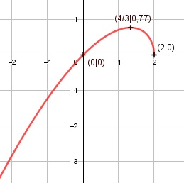

Aufgabe 127 f(x) = f(x) = 0,5x * (4 - 2x)0,5 Produktregel erste Ableitung: u = 0,5x, u' = 0,5 v = (4 - 2x)0,5 Kettenregel: v' = 0,5 * (-2) * (4 - 2x)-0,5 = - (4 - 2x)-0,5 f'(x) = 0,5 * (4 - 2x)0,5 - (4 - 2x)-0,5 * 0,5x x f'(x) = 0,5 * [(4 - 2x)0,5 - -------------] (4 - 2x)0,5 4 - 2x - x 2 - 1,5x f'(x) = 0,5 * -------------- = ------------ (4 - 2x)0,5 (4 - 2x)0,5 f'(x) = (2 - 1,5x) * (4 - 2x)-0,5 Produktregel zweite Ableitung: u = 2 - 1,5x, u' = -1,5 v = (4 - 2x)-0,5 Kettenregel: v' = (-0,5) * (- 2) * (4 - 2x)-1,5 v' = (4 - 2x)-1,5 f''(x) = -1,5*(4-2x)-0,5 + (4-22)-1,5*(2-1,5x) 1,5 2 - 1,5x f''(x) = - ------------- + --------------- (4 - 2x)0,5 (4 - 2x)1,5 -1 2 - 1,5x f''(x) = ------------- * (1,5 - -----------) (4 - 2x)0,5 (4 - 2x) -1 1,5*(4-2x) - (2-1,5x) f''(x) = ------------- * (-----------------------) (4 - 2x)0,5 4 - 2x -1 6 - 3x - 2 + 1,5x f''(x) = -------------- * (--------------------) (4 - 2x)0,5 (4 - 2x) 4 - 1,5x f''(x) = - ------------ (4 - 2x)1,5 Zur Beurteilung, ob f'''(x) ≠ 0: (Begründung siehe Aufgabe 105) u = -(4 - 1,5x) = 1,5x - 4, u' = 1,5 u' 1,5 f'''(x) = --- = -------------- ≠ 0 für alle x < 2 v (4 - 2x)1.5 4 - 2x muss ≥ 0 sein, wegen Quadratwurzel. 4 - 2x ≥ 0 |+2x 2x ≤ 4 |:2 x ≤ 2 Definitionsbereich: -∞ < x ≤ 2 Wertebereich: f(x) wird dann am größten, wenn x = 4/3 (Extrempunkt) f(4/3) = 0,77 --> -∞ < f(x) ≤ 0,77 Symmetrie zur y-Achse bzw. zum Punkt (0|0): f(-x) = f(-x) = ≠ f(x) --> keine Achsensymmetrie -f(-x) = ≠ f(x) --> keine Punktsymmetrie Nullstellen: f(x) = 0 = 0 |2 0,25x2 * (4 - 2x) = 0 x2 - 0,5x3 = 0 x2 * (1 - 0,5x) = 0 x1 = 0 1 - 0,5x = 0 |+0,5x 0,5x = 1 | :0,5 x2 = 2 N1(0|0), N2(2|0) Schnittpunkt mit der y-Achse: x = 0 f(0) = = 0 Sy(0|0) Extrempunkte: f'(x) = 0 2 - 1,5x ------------- = 0 |*(4 - 2x)0,5 (4 - 2x)0,5 2 - 1,5x = 0 |+1,5x 1,5x = 2 |:1,5 x = 4/3 f(4/3) = = 0,77 1,5 * 4/3 - 4 f''(4/3) = ------------------ < 0 (4 - 2 * 4/3)1,5 --> Hochpunkt(4/3|0,77) Wendepunkte: f''(x) = 0 1,5x - 4 ------------- = 0 |*(4 - 2x)1,5 (4 - 2x)1,5 1,5x - 4 = 0 |+4 1,5x = 4 | :1,5 x = 8/3 --> außerhalb des Definitionsbereiches --> keine Wendepunkte Graph:
